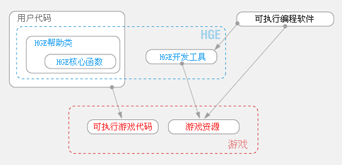

|
HGE version 1.81
英文原版版权 © 2003-2008, 归Relish Games所有. 保留所有权限。
中文版权© 2009归easis所有. 仅供学习参考，请勿用于商业用途。
本人能力有限，翻译疏漏在所难免，如愿指正，请发送邮件至yudinosaur@126.com
http://hge.relishgames.com
综述
HGE是一个强大而又易用的硬件加速2D游戏引擎.
对于那些想通过简单快速的方法开发商业化2D游戏的人来说他是一个全功能的游戏引擎。 它覆盖了几乎所有可以想到的 2D 游戏 类型:
你甚至可以不必考虑任何非游戏逻辑的代码就可以创建出任何东西，小到一个简单的智力游戏，大到高级的复杂层次的游戏平台或策略游戏。
你不必了解那些关于“窗口事件信息(window message)”，DirectX编程或是其他的一些资料，就可以在15分钟内开发出属于你自己的游戏。
HGE 可以运行在 Microsoft Windows 98, 2000, NT, ME, XP 上 并且需要 DirectX 8.0.
它甚至可以在包括Intel Solano (i815 chipset).在内的一些低端集成显卡上运行。
HGE 可以在任何 C++ 编译器下很好的运行，这些编译器包括
Visual C++, Borland C++, MinGW 和 Metrowerks Codewarrior.
特点
 |
详尽专业的“2D 游戏”专题
面向任务设计，无冗余和大量的高级特性 |
 |
|
简单的接口，方便的使用
你不必了解系统编程方面的知识，并且不需要额外的库文件。有用的类和头文件。非常简洁的安装和使用。
|
|
|
先进的技术
HGE 是建立在现今比较流行的Direct3D API的基础之上的， Direct3D API可以制造出很多特效。
α混合，着色，几何变换等等，这些都能非常好的实现，并且不会产生运行冲突。 |
|
|
完整清晰的文档
全面组织和描述了所有特性，提供大量的游戏开发通用方法。 |
|
|
HGE 就是它!
HGE 保持着高度的兼容性，每一个主要特性都是相互关联并专门构思的。
|
|
|
免费
HGE 遵照The zlib/libpng 许可协议，也就是说它是一个可以用于包括商业化开发的完全免费的引擎。 |
结构
HGE 提供了3层抽象类，覆盖了单人和团队游戏开发的所有需求:
| 核心功能(Core functions) |
帮助类(Helper classes) |
编程工具(Authoring tools) |
| 所有的系统依赖(system-dependent)功能和操作。 |
上层游戏对象类 |
游戏开发套件 |

核心功能
硬件加速2D图形
支持BMP, DDS, DIB, JPG, PNG, TGA 文件格式，窗口化和全屏模式；
Support for BMP, DDS, DIB, JPG, PNG, TGA file formats; windowed and fullscreen modes;
准确的纹理到像素的渲染；任意形状的渲染，画线和填充图形；渲染至纹理，直接纹理数据访问，
区域剪裁，多种混合模式；透明度通道和混合；着色；全局场景转换；Z-缓冲;
音频特效和音乐回放
支持 WAV, MP3, MP2, MP1 和 OGG 音频文件格式；
支持 MO3, IT, XM, S3M, MTM, MOD 和 UMX 等音频文件格式；
压缩流媒体回放，灵活的音量调节控制。
键盘鼠标输入处理
获得键盘的按键状态，键名，将键码转换成字符；
获得鼠标位置和滚轮的轨迹；基于事件和轮询的输入处理。
资源
可以从磁盘文件中加载资源；也可以从ZIP文件中加载资源；
还可以轻松的将两者相互转换；多资源类型支持。
定制功能
可同步显示帧频和无限制的FPS；固定的FPS模式；
同步刷新显示器；计算FPS数；空闲时间处理；
初始化和日志文件
读写字符串，整数和浮点数;printf形式的日志输出；
帮助类
精灵和动画
清晰的硬件特性接口；对于锚点的支持；对于图像的伸展，旋转和缩放的支持；
纵横转换支持；定时功能的支持；多种回放模式的支持；
字体
所见即所得(加载并渲染到窗口)的位图字体；大量的文字布局模式；
对字体的拉伸，缩放，旋转支持；对字符串的宽度计算；printf形式的文本输出。
粒子系统和扭曲矩阵Particle systems & Distortion mesh
高级的2D粒子系统可以创建类似于烟雾，爆炸和魔法效果等特效。
随引擎提供了一个粒子系统管理器；定时和移动功能；边界区域的计算和碰撞检测；
水纹，透镜，页封装(Page Wraps)，扭曲以及即时演算的特效。
资源管理
强大的资源脚本；实时脚本转换；只调用一个函数便可以创建出复杂的对象。
全自动的内存管理；预读取和清除指定的资源集合。
GUI
简单灵活的组件管理；默认组件：文本，按钮和幻灯片；
支持高度交互，友好的GUIs；
向量和颜色
全面的用来处理2D向量的操作和函数；
全面的用来计算ARGB颜色的操作；
硬件颜色转换，颜色定位。
碰撞检测
(即将面世)
面向边界框的，基于半径的和全像素表示的物体的碰撞检测；
转换后对象的碰撞检测；视界测试；灵活的功能构建。
块地图
(即将面世)
多层次块地图；地图滚动；块属性操作；块动画；
用户自定义块刷；坐标转换；块剪裁。
代码编写工具

|
资源编译器
HGE使用时下流行的ZIP 文件格式来保存资源；
因此你可以把游戏中使用的HGE资源文件编译成你喜欢的格式。你甚至可以给该ZIP文件加密。
|
|

|
纹理工具
PNG 优化工具和纹理封装工具会自动将你的精灵放在纹理叠片上。优化他们占用的空间，
确保旋转和缩放这些精灵的时候的准确性，并能生成相关资源脚本。
|
|

|
粒子系统编辑器
可以在可视化的环境下编辑高级2D粒子系统的所有参数。
你可以修改方向，速度，生存周期，轨道，粒子颜色和透明度等参数。并可以在实时显示下看到修改结果。
|
|

|
位图字体创建工具
可以通过系统中安装的任意字体创建出一个字体位图。
然后你就可以用图形编辑器向字体上增加各种特效。
|
|

|
块地图编辑器
(即将面世)
允许使用块，动画来描绘地图，并编辑块属性。
还提供了对图案，区域路径画刷的支持。
你可以使用任意数量的可见的不可见的层并定义他们的属性。
|
|
|